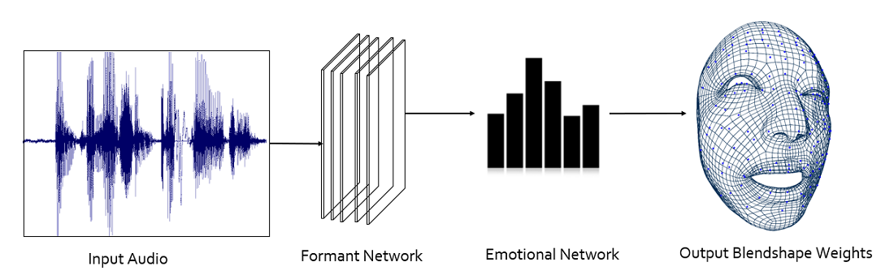

Digital Human
【Audio/Text 2 Face/Body】，个人对语音或文本驱动数字人脸部或者身体的研究成果感到惊叹和欣喜。
- 恰逢ChatGPT的到来，其巨大的多伦对话能力让人惊艳，同时又具备角色扮演能力，为数字人注入灵魂
- 基于Diffusion的扩散图像生成模型，DALL·E2/Mid Journey等Prompt生成图像的能力超出人们所想
- 再基于深度学习模型(特别是Transformer)，联合文本或语音驱动数字人的表情和动作
在GPT这类巨大标注&训练成本的大模型下，一般算法工程师很难直接参与。而基于以上多中AI能力，AIGC的商业化确实值得探索和挖掘的，正如我所关注的，未来的24小时无限可用的数字人向我们走来。
从以上视频可以看出，当前的图像生成，特别是仿生人的生成已经十分逼真，但是目前我所使用的还是2D的图像，AI直接基于人脸/身体生成3D格式，可以直接绑定Unity/UE5模型上，在逼真度上更值得期待，目前Adobe，英伟达再此都有不少研究成果。
同时也可以看出，因为以上数字人表情驱动是使用D-ID平台，其训练数据分布更趋向于欧美人的人脸驱动，因此如何迁移到亚洲人脸，或者准备更多训练数据，都是可优化的方向。
Auido2Face
- 将语音直接驱动数字人表情，涉及到相关AI技术:
- 语音识别ASR
- 语音合成TTS(若直接通过原声驱动，可不引入此环节)
- 情感分析
- Voice2Face, 通过语音信号和人脸关键点绑定，通过神经网络来生成每帧人脸具体点的坐标位置
值得挖掘的一点小细节:当前市面上的语音合成驱动数字人表情产品中，其TTS的人声情感是统一认为设定的。其实仍可以对文本/音频，甚至每句话的内容进行情感分析， 以一个情感vector联合原特征输入到表情驱动模型中，或许会有逼真的效果。
探索从未止步，未完待续...